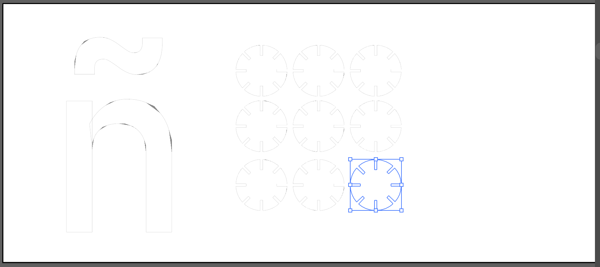
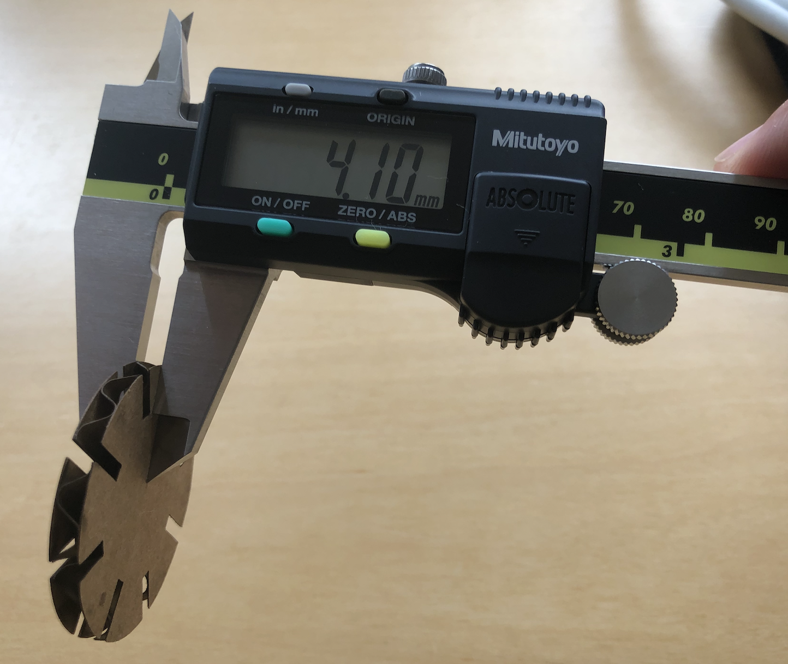
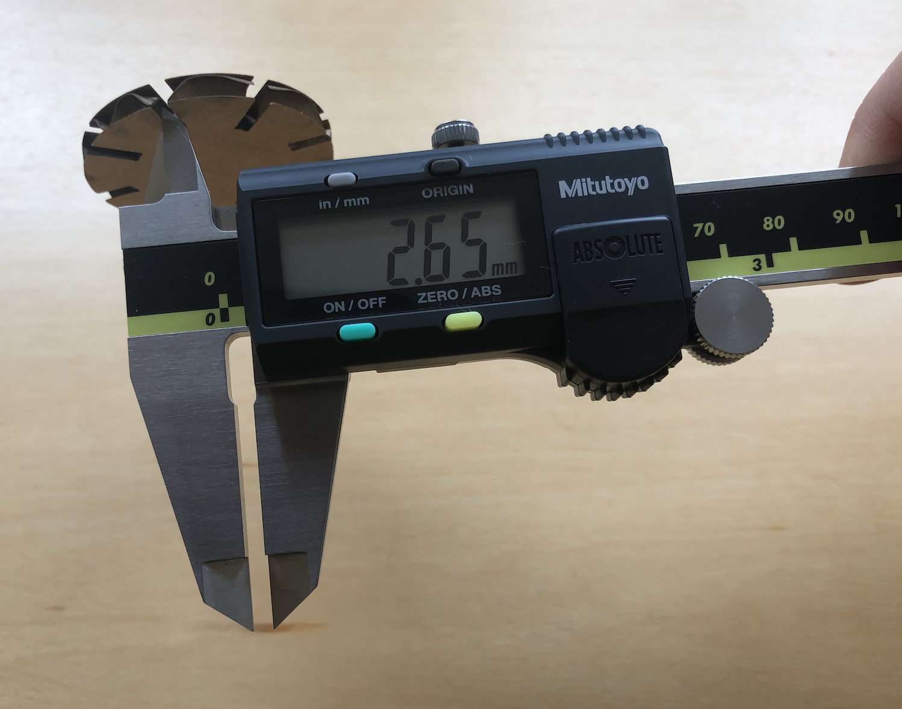
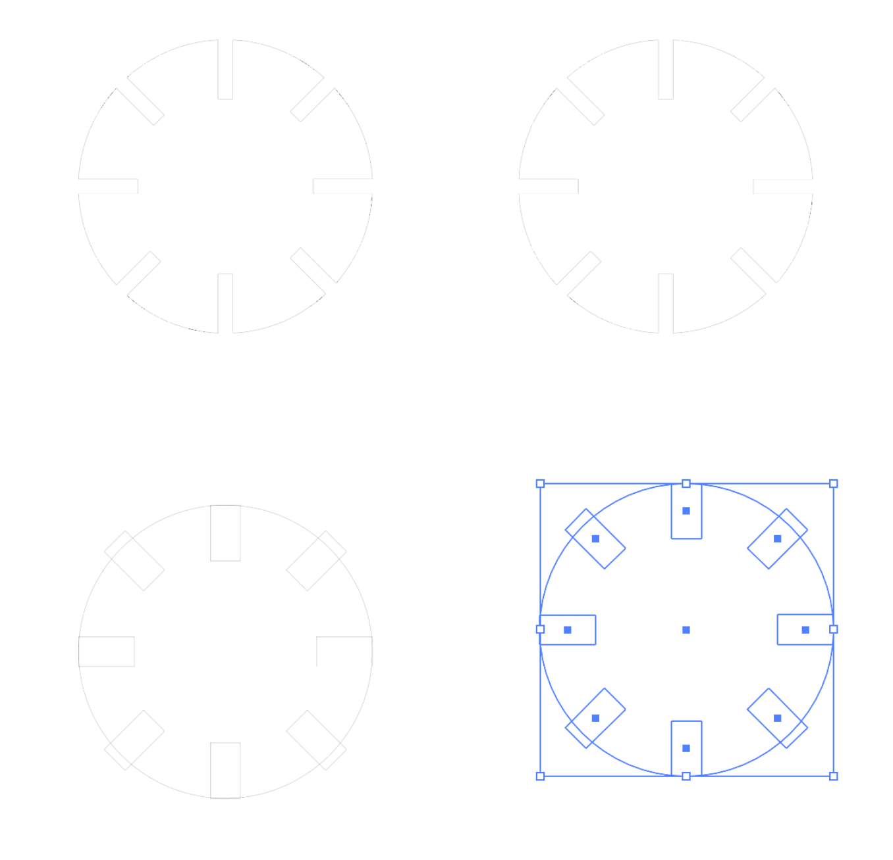

Time to learn about lasers!

The first assignment was to build a press-fit puzzle made out of cardboard and 12 (or more) pieces that assembled together would not fall apart with a small shake.
After re-learning how to use basic Illustrator tools, I created a relatively simple model based on discs with incisions that would function as joints (selected below):

This resulted in this:

Given the careless design of this first discs, I realized that they did not account for the width of the cardboard itself, and therefore could not be assembled together. I used calipers to measure the cardboard width:


Then, with the right measures, updated the design of the discs:

Note the original design above, and the newer with the wider spaces below. This resulted in a new, wider spaced disc: